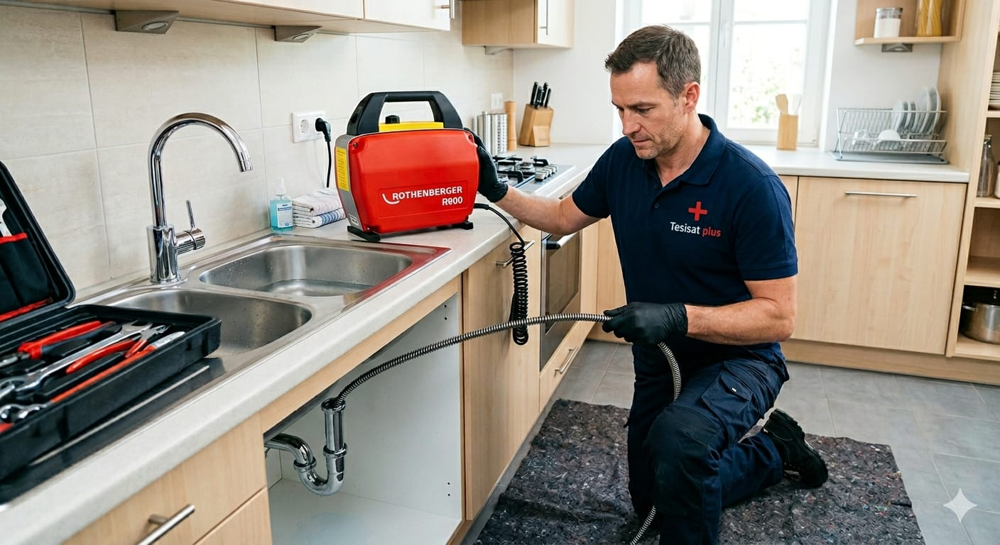
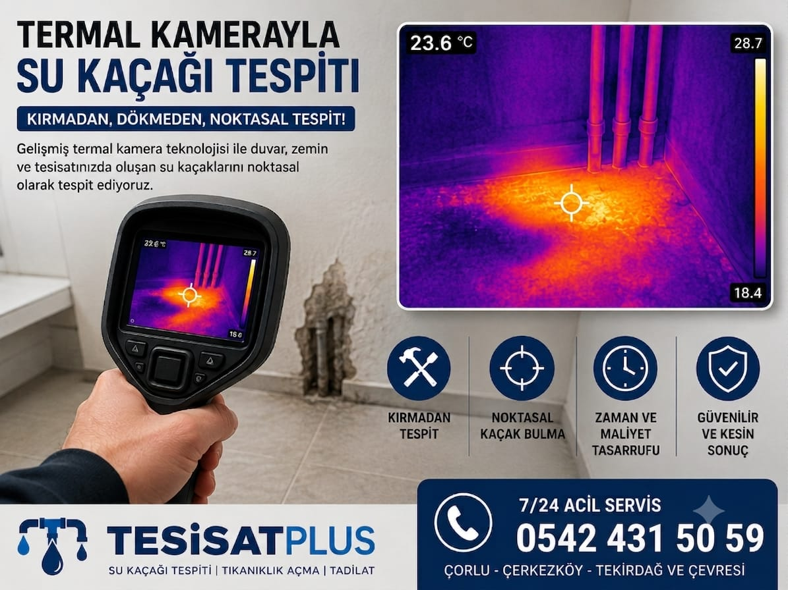
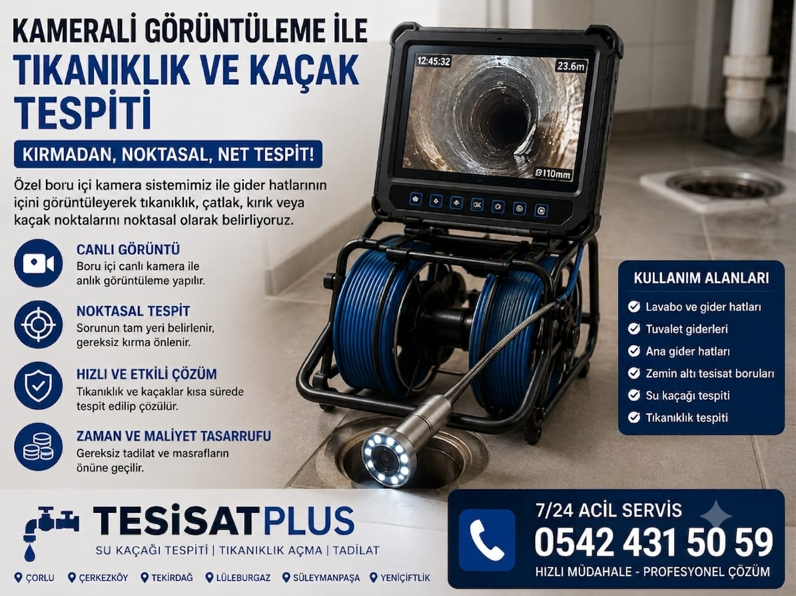
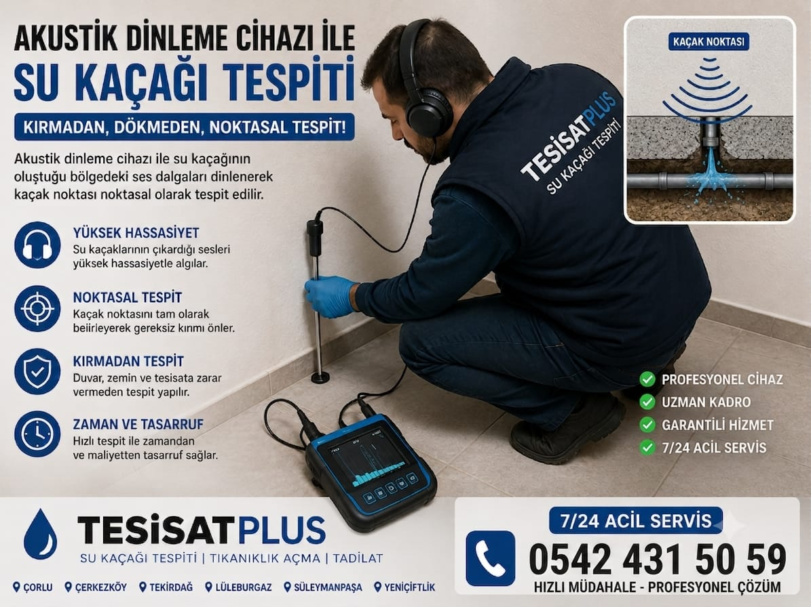
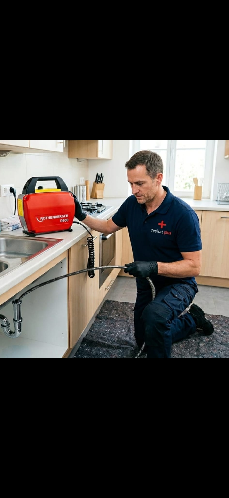

Görsel Açıklaması
Ev ve iş yerlerinizde meydana gelen su kaçaklarını ve tıkanıklıkları en son teknoloji cihazlarla, duvarlarınızı kırmadan dökmeden buluyor ve anahtar teslim onarıyoruz.

Hızlı ve Kalıcı Destek
Kameralı ve Akustik Cihazlar
Ev veya iş yerinizde oluşan problemleri en doğru teknolojileri kullanarak kırıp dökmeden çözüme ulaştırıyoruz.
TesisatPlus olarak tıkanıklık açma işlemlerini kırma dökme yapmadan, profesyonel cihazlarla gerçekleştiriyoruz. Amaç, gider hattına zarar vermeden tıkanıklığın bulunduğu noktayı tespit edip hızlı şekilde açmaktır.
Tesisattaki basınç değerlerini ölçtükten sonra, temiz su borularındaki görünmeyen sızıntıları akustik dinleme cihazları ile dinleyerek ses frekansları sayesinde tam yerinde noktasal olarak tespit ediyoruz.
Yüzeylerin altındaki sıcak su tesisatlarını ve nemlenmiş bölgeleri termal kameralarla tarıyoruz. Sıcaklık farklılıklarını canlı ekrana yansıtarak kırmadan, duvar veya şap arkasındaki kaçağı buluyoruz.
Özel boru içi kameralarımızla atık su ve pis su gider hatlarının içine giriyoruz. Gider borularındaki tıkanıklık nedenini, conta sıyrılmalarını, çatlakları veya çökmeleri canlı izleyerek tespit ediyoruz.
TesisatPlus olarak sadece tespit etmekle kalmıyor, arızalı boruyu değiştirdikten sonra açılan küçük bölgelerin sıva, alçı, fayans tamirini ve boyasını da kendi ustalarımızla yaparak anahtar teslim kapatıyoruz.
Sıradan tesisatçıların aksine, evinize girdiğimiz andan sorunu tespit edip onarımı tamamlayıp fayansınızı yapıştırana kadar tüm süreci tek çatı altında yürütüyoruz.
Kaçak tespiti yapan ayrı, boruyu tamir eden ayrı, fayansı kapatan ayrı usta aramazsınız. Tüm işlemleri tek ekiple hallederiz.
Noktasal cihazlarımızla kaçağı aramak saatler değil dakikalar sürer. Eviniz şantiyeye dönmeden işlem tamamlanır.
Termal kameralar, akustik kulaklıklar ve gider kameraları ile kaçağın tam noktasını bulup yalnızca orayı açarız.
Gelişmiş cihazlarımız ve deneyimli ustalarımızla 7/24 hizmetinizdeyiz. Bizleri doğrudan arayabilir veya WhatsApp üzerinden hemen randevu alabilirsiniz.
Müşterilerimize sunduğumuz kaliteli hizmetlerin, su kaçağı tespitlerimizin ve onarımlarımızın görselleri.




Tekirdağ Çorlu merkezli firmamız ile çevre ilçe ve mahallelere hızlı mobil araçlarımızla kesintisiz servis sağlıyoruz.
Kırmadan Su Kaçağı Tespiti & Robotla Tıkanıklık Açma Merkezimiz
Kameralı Görüntüleme, Tıkanıklık Açma & Noktasal Cihazla Su Kaçağı Tespiti
Tesisat hizmetlerimiz, kaçak tespiti ve kırma dökme işlemleri hakkında aklınıza takılan soruların yanıtları.
Merak ettiğiniz konuları danışmak, fiyat teklifi almak veya servis kaydı oluşturmak için bize yazın veya arayın.
Tüm sıhhi tesisat arızaları ve kaçak tespitleri için bir telefon uzağınızdayız.
Kazimiye Mah. Acı Badem Sok. No:14 Çorlu / Tekirdağ